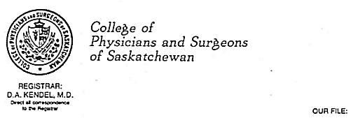

THE CIRCUMCISION REFERENCE LIBRARY
|  |
G. W. PEACOCK BUILDING, Business: (306)
244-7355 |
|
February 20, 2002. TO: Members of the College FROM: Registrar RE: Caution Against Routine Circumcision of Newborn Male Infants The practice of medicine is increasingly becoming evidence based. There is a strong and growing consensus that medical intervention should be based upon sound evidence of expected benefit that outweighs the potential risk of any such intervention. Where there is little evidence of expected benefit from a surgical procedure, but well recognized risk of surgical complications that may cause harm, it would be generally be considered imprudent if not improper for a surgeon to perform a surgical procedure. Notwithstanding these fundamental principles, 27.6% of newborn males were circumcised in this province in 2000-2001, in spite of the fact that the Canadian Paediatric Society (CPS) has for two and a half decades explicitly cautioned against routine circumcision of newborn male infants. Since August 1996, infant circumcision has not been a publicly insured service in Saskatchewan. The decision to de-insure the service was based partly on the lack of valid medical indications for the procedure. Even though citizens must now personally pay for this service, the incidence of male circumcision has dropped only moderately over the past five years. The relatively high rate of newborn circumcision in Saskatchewan stands in very sharp contrast to that in some other regions of the country. For example, in Nova Scotia the rate has dropped to 1.5%, while in Newfoundland/Labrador it has dropped to 0.6 percent. Such high infant circumcision rates in Saskatchewan in the face of an explicit caution from the CPS is of great concern to the College of Physicians and Surgeons, and ought to be a concern to all physicians who perform the procedure. Is it possible that so many Saskatchewan physicians are totally unaware of the position of the CPS, the research evidence that supports that position? If physicians are unaware of the evidence against routine newborn circumcision, why do they continue to practice in a manner that ignores this evidence? In my dialogue with Saskatchewan physicians about this issue, I've encountered many who claim to be "neutral" in their opinion about routine circumcision, but perform the procedure strictly on the basis of parental preference. Page two On the surface, that approach might seem commendable as it seems sensitive and responsive to parental values. However, it begs the question as to whether the parents are appropriately informed about the benefits and risk of this procedure. Even more importantly, it begs the question as to whether physicians are providing accurate and adequate informatin to parents that is likely to yield a truly informed decision on their part. Informed consent to any surgical procedure relies on an assumption that the decision maker possesses full and accurate information about both the benefits and risks of the procedure. The onus is cast upon the surgeon, who might perform the procedure to ensure that such information is not only conveyed to the decision maker, but is understood by the decision maker. It is difficult to identify any other domain of medicine in which physicians would feel comfortable playing such a passive role in a decision pathway culminating in surgery. It is also difficult to identify any other domain of medicine in which practice patterns stand in such contrast to reseach evidence. When the Council of the College of Physicians and Surgeons reviewed this issue at its last meeting, it directed the Registrar to initiate an effective educational strategy to raise professional and public awareness of this issue. The first step in that strategy is this memo, which is directed to all members of the College who perform circumcisions, or are likely in a position to influence parental decision making on this issue. These are my recommendations to you: (1) First, be sure that you are fully and accurately informed about the research literature on the subject, which serves as the basis for the CPS position against routine circumcision of newborn male infants. You can obtain a copy of the CPS Position Paper, and a succinct summary of recent research by logging on to the CPS website at www.cps.ca. If you are not able to access this information from the CPS website, please give Ms. Jo-Anne Wolan a call at the College. We will be pleased to send you a written copy of the CPS position paper. (2) In any dialogue you have with the patients about potential circumcision of newborn male infants, be sure that you accurately and effectively convey the message that this is not a recommended procedure. (3) If parents remain adamant in their preference that circumcision be performed, notwithstanding their awareness of the research on the subject, remember that you are under no obligation to perform any surgical procedure for which there are not valid medical indications. You can, and should respectfully decline to perform the procedure just as you respectfully decline to carry out other requested medical acts that you regard to be inappropriate. (4) If the parental request for infant male circumcision is based exclusively upon religious beliefs and values, and you are inclined to act in deference to those religious beliefs and values, you would be prudent to require parental signature of a consent document which clearly stipulates that the circumcision in question is not medically indicated and is being performed in accordance with parental religious practices. In such cases, physicians would be prudent to consult with and seek advice from the Canadian Medical Protective Association before proceeding. The Saskatchewan College of Physicians and Surgeons issed a supplemental letter on 7 May 2002. The text is set forth below: May 7, 2002 TO: All family physician, pediatrician, obstetrician and urologist members of the College of Physicians and Surgeons FROM: Registrar, Dr. D.A. Kendel RE: Infant male circumcision A substantial number of College members who received my memo of February 20, 2002 regarding infant male circumcision have sought clarification from the College in respect of information contained in that memo. We are pleased to provide this clarification to all members who were in receipt of the February 20th memo. First, let me clarify that it is not the intention of the College of Physicians and Surgeons to prohibit physicians from performing infant male circumcision if it is their professional judgment that the procedure is indicated, and there is truly informed consent to support its performance. However, it is the view of the College that this surgical procedure is sometimes performed much too casually, without adequate attentiveness to the risk for patients and the surgeon. The Exercise of Sound Professional Judgment It is the expectation of the College that all physicians exercise sound professional judgment in all the professional decisions they make. In the exercise of professional judgment physicians ought to consider many factors, including the preference of patients (guardians), the best available evidence with respect to potential benefits and risks of a contemplated intervention, and alternatives to that intervention. While attentiveness to patient preference is always important, maintenance of professionalism demands that physicians decline to become little more than robots who perform an array of medical interventions on demand. While no patient should be coerced to undergo a medical procedure against his/her will, it is equally true that no physician should be coerced to perform a medical procedure that is contrary to his/her professional judgment. Every day, physicians are bombarded with patient pressure to prescribe antibiotics where there are no medical indications for their use. Physicians are sometimes pressured to issue medical reports to employers or insurance companies that support a particular patient's aspirations, but are inconsistent with the physician's professional opinion and judgment. In such circumstances, we encourage and expect physicians to make sound professional decisions based upon reliable evidence and sound judgment, rather than subordinating their judgment to the will of patients. We encourage and expect physicians to take the same approach with respect to requests for infant male circumcision. When physicians receive such requests, it is important that physicians take ample time to gain an understanding of the basis for the request, to provide accurate detailed information to parents about the potential benefits, risks and alternatives, and to gauge their understanding of that information. If parents persistently request circumcision of a newborn male infant after a thorough dialogue about benefits, risks and alternatives, a physician is not obligated to perform the procedure if he/she does not regard the procedure to be medically indicated and appropriate. Physicians can respectfully decline to perform this medical procedure just as they respectfully decline to prescribe medications that are not medically indicated and just as they decline to author medical opinions contrary to their best professional judgment. At the conclusion of my February 20th memo, I made reference to the unique circumstance where infant male circumcision is requested for religious rather than medical reasons. In such circumstances, there is a high probability that the procedure will be performed by someone other than a physician if the option is not made available through a physician. Some physicians are understandably inclined in that circumstance to accede to the request because they logically believe the procedure would be performed more safely by a physician than by a non-physician. The final sentence in my February 20th memo, which recommended consultation with the CMPA, pertained to circumstances in which a physician is confronted with a request for infant male circumcision based upon religious rather than medical reasons. Where physicians may be inclined to comply with such a request as the "lesser of two evils," even though it is contrary to his/her medical judgment, we would recommend that physicians obtain advice from the CMPA about appropriate documentation of the consent process so that it explicitly defines the conditions under which the procedure is performed. Obtaining informed consent for infant male circumcision Most physicians today understand that obtaining informed consent for any medical procedure is a process rather than simply obtaining the signature of a patient or guardian on a consent form. Obtaining informed consent for any procedure requires disclosure of all relevant benefits and risks of the anticipated procedure as well as alternatives to that procedure. While Canadian courts have stopped short of casting an obligation on physicians to ensure that all of the information is understood by the patient or guardian, a prudent physician will make a reasonable effort to achieve understanding of the information that is shared with patients/guardians. The surgical consent form used in some Saskatchewan Health Districts concludes with this certification statement that requires a physician's signature: I hereby certify that I've explained the nature, effect, risks, and alternatives of the above-mentioned procedure(s) and in my opinion the above-named patient or guardian understands their nature and consequences. To formulate and certify a professional opinion that a patient has understood the nature, effect, risks, and alternatives of a contemplated medical intervention requires much more than one-way disclosure of risks to the patient. It requires two-way dialogue through which the physician has reasonable potential to gauge the understanding held by the patient or guardian. Regrettably, the research evidence in respect to what primarily motivates parents to request infant male circumcision is not very encouraging. In a study published in Pediatrics (1987), Brown reported that the strongest factor considered by parents in a request for infant male circumcision is whether the father is circumcised. It is unfortunate to consider that surgery, which is not without risk, might be undertaken on an infant just to ensure that he "looks like his dad." Most physicians would consider it quite unethical to perform facial plastic surgery at the request of parents to make a child look more like his dad. However as a profession, we've often acquiesced to parental requests for circumcision based on nothing more substantive than this same logic. Medical Indications for Infant Male Circumcision On the basis of thorough review of the most recent medical literature, the Canadian Paediatric Society has concluded that the overall evidence of the benefits and harms of circumcision is so evenly balanced that it does not support recommending circumcision as a routine procedure far newborns. As early as 1971, and again in 1975, the American Academy of Pediatrics (AAP) took a stand against the routine circumcision of newborns on the basis that there are no valid medical indications for circumcision in the neonatal period. In 1975, 1982, and again in 1996 the Canadian Paediatric Society (CPS) reviewed the literature and reached the same conclusion. Complications of Infant Male Circumcision Infant male circumcision is often treated as a very minor procedure with virtually no risk of significant complications. That is frankly not true. Infant male circumcision may lead to complications that range from minor to severe. They include easily controllable bleeding, amputation of the glans, acute renal failure, life threatening sepsis and rarely death. Reported rates of such complications vary widely in the literature. In a study reported in the British Journal of Surgery (1993) Williams and Kapila have suggested that complication rates range from 2% to 10%. The complaints committee of the College of Physicians and Surgeons has recently concluded its investigation of a tragic case in which routine infant male circumcision resulted in urinary tract obstruction, massive bladder distention, and compression of the inferior vena cava. The physician who carried out the circumcision believed the procedure had been performed uneventfully. What is the Risk for Physicians? At our suggestion, the Canadian Medical Protective Association (CMPA) reviewed its closed legal claims pertaining to infant male circumcision between 1991 and 2002. There were twenty such lawsuits and the decisions were equally split between the plaintiffs and the respondent physicians. During the same timeframe, the CMPA gave assistance to physicians in respect of thirty-six circumcision related complaints to the Colleges of Physicians and Surgeons, half of those being related to newborns. Physicians might be tempted to take some solace from these data which suggest that College complaints and lawsuits related to infant male circumcision are relatively infrequent. However before becoming too complacent in the matter, we would recommend that physicians take heed of a profound rise in activity by citizen groups that very vigorously oppose infant male circumcision, and characterize it as unwarranted mutilating surgery. In many countries including Canada, these citizen groups are gaining a higher profile and more credibility among the general public. They are bringing to light new evidence that the male prepuce may play an important physiological and psychological role in adult male function, which has to date been largely ignored in any consideration of harm associated with infant male circumcision. As a consequence of the public awareness raised by these groups, a growing number of adult males and/or their parents are now expressing strong resentment against physicians who performed infant male circumcision many years ago at their request. The retroactive anger toward these physicians is generally based upon arguments that parents were given woefully inadequate information about potential adverse impact on adult male function, and inadequate information about normal infant penile development and hygiene. Whether this growing backlash against physicians does or does not generate lawsuits, it is certainly making life somewhat unpleasant for physicians who are perceived by their former patients as having been much too casual in their decision to perform infant male circumcision. While the College's primary mandate is public protection, we do encourage physicians to give careful thought to the downstream risks they may incur by taking an inappropriately casual approach to infant male circumcision driven exclusively by parental preference without valid medical indication for the procedure. If members do have any unresolved questions or concerns about this issue, we would be pleased to respond to individual requests for clarification. ### |
http://www.cirp.org/library/statements/sask2002/